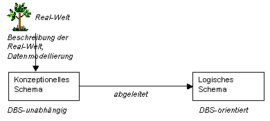
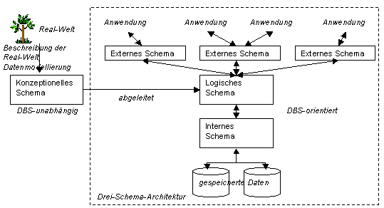
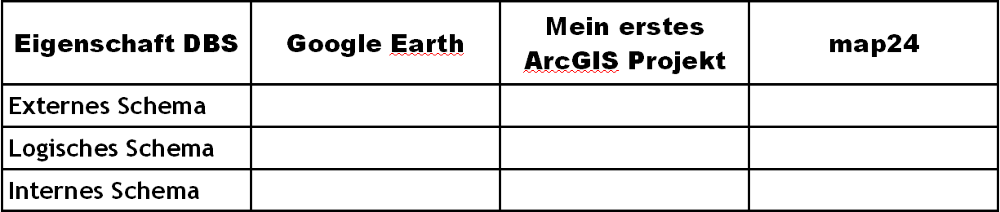

Datenbankschemata und Datenbankinstanzen
Beim Entwurf einer Datenbank wird zwischen zwei Abstraktionsstufen und ihren entsprechenden Datenschemata, dem konzeptionellen und logischen Datenschema, unterschieden.
-
Ein konzeptionelles Datenschema ist eine systemunabhängige Datenbeschreibung, d.h. sie ist unabhängig von den eingesetzten Datenbank- und Computersystemen. (Zehnder 1998)
-
Ein logisches Datenschema beschreibt die Daten in der Datenbeschreibungssprache (DDL = Data Definition Language) eines bestimmten Datenbank-Verwaltungssystems. Es beschreibt (abgeleitet aus dem konzeptionellen Schema) formal den grundlegenden Aufbau der Datenstruktur. (Zehnder 1998)

Abbildung 14: Schematische Darstellung der verschiedenen Schemas (GITTA 2005)Das konzeptionelle Datenschema orientiert sich ausschließlich an der
Datenbankanwendung und somit an der realen Welt, nicht aber an der
datentechnischen Infrastruktur (DBMS und Computersysteme), die nur für die
Implementierung zum Einsatz kommen. Üblicherweise sind Relationen die Werkzeuge
für die Erstellung eines konzeptionellen Schemas.
Beim
Datenbankentwurf wird aus dem konzeptionellen Datenschema das logische Schema
abgeleitet. Am Ende dieser Ableitung steht das e Datenschema für eine spezielle
Anwendung und ein spezielles DBMS. Ein DB-Entwicklungssystem setzt danach das e
Schema direkt in Anweisungen für das DBMS um.
Konzept und Umsetzung - Die 3-Schema-Architektur
Nachdem wir e Datenbankschemata kennengelernt haben, müssen noch zwei weitere Schemata ergänzt werden. Die Einführung eines externen und internen Schemas ist notwendig für das Verständnis der gegenwärtigen Informationssystem-Architekturen. Vor diesem Hintergrund wird bei Informationssystemen auch von einer Drei-Schema-Architektur gesprochen.

Abbildung 15: Die Drei-Schema-Architektur (GITTA 2005)Die Drei-Schema-Architektur beschreibt unterschiedliche Sichtweisen des Datenbankentwurfs:
- Logisches Schema:
- Das Logische Datenschema erweitert das Konzeptschema um datentechnische Angaben (z. B. Feldformate, identifizierende Suchbegriffe etc.). Das logische Datenbankschema gehorcht den Regeln einer durch das zu verwendende DBMS gegebenen Struktur, z.B. dem relationalen Datenmodell, bei dem alle Daten in Tabellen abgelegt werden (Wikipedia-Autoren 2. November 2011)
- Externes Schema:
- Ein externes Datenschema beschreibt die Benutzersichtdaten bestimmter Benutzer(gruppen) sowie die damit verbundenen spezifischen Operationen und Bedingungen. Da das externe Schema Abbild einer konkreten Nutzer-Anwendung ist, betrifft es im Allgemeinen nur den anwendungsrelevanten Teilbereich des logischen Schemas (Schnittstellen) (Zehnder 1998).
- Internes Schema:
- Das interne Datenschema beschreibt den Inhalt der
Datenbasis und die benötigten Dienstleistungsfunktionen, soweit dies für den Einsatz des
DBMS nötig ist (Zehnder 1998).
Das interne Schema beschreibt somit die Daten aus technischer Sicht des Systems. Es übersetzt das zugehörige logische Schema in konkrete datentechnische Aspekte, wie Speichermethoden oder Hilfskonstrukte zur Steigerung der Effizienz.
Daraus folgt, dass jede Datenbank genau ein internes und ein logisches Schema hat, während jeweils mehrere externe Schemata möglich sind. Das Ziel der Drei-Schema-Architektur ist, während des Entwurfs und der Implementierung einer Datenbank die Trennung der Benutzeranwendungen von der physischen Datenbank (den gespeicherten Daten), zu gewährleisten. Physisch sind die Daten lediglich auf der internen Ebene vorhanden, die anderen Repräsentationsformen werden jeweils bei Bedarf daraus berechnet bzw. abgeleitet. Das DBMS hat die Aufgabe, die Abbildung zwischen den einzelnen Ebenen zu realisieren.
Schema und Instanz
Bei allen Datenbankmodellen ist es wichtig, zwischen der Beschreibung der Datenbank und der real implementierten Datenbank zu unterscheiden. Die Beschreibung einer Datenbank wird Datenbankschema genannt. Das Datenbankschema wird während des Datenbank-Design-Prozesses festgelegt und ändert sich später nur sehr selten und nach Möglichkeit nie. Die eigentlichen Daten einer Datenbank verändern sich im Laufe der Zeit häufig. Der Datenbankzustand zu einem bestimmten Zeitpunkt, gegeben durch die aktuell existierenden Inhalte und Beziehungen und deren Attribute, wird Datenbankinstanz genannt. Versuchen Sie sich anhand der nachfolgenden Abbildung zu verdeutlichen, dass das Datenbankschema als Schablone oder Bauplan für eine oder mehrere Datenbankinstanzen betrachtet werden kann.
 Abbildung 16: Beispielhafte Darstellung von Datenbankschema und Instanzen mit Hilfe einer Analogie aus dem Bauwesen. Der konkret
ausgeführte Bauplan stellt kein Haus, sondern eben den zeichnerischen Entwurf eines Hauses - eben den Bauplan dar. (GITTA 2005)
Abbildung 16: Beispielhafte Darstellung von Datenbankschema und Instanzen mit Hilfe einer Analogie aus dem Bauwesen. Der konkret
ausgeführte Bauplan stellt kein Haus, sondern eben den zeichnerischen Entwurf eines Hauses - eben den Bauplan dar. (GITTA 2005)Datenunabhängigkeit
Mit Kenntnis der Drei-Schema-Architektur lässt sich der Begriff der Datenunabhängigkeit so erläutern, dass eine höhere Ebene dieser Datenarchitektur immun gegenüber Änderungen auf der nächst tieferen Ebene ist.
- Physikalische Unabhängigkeit:
- Das logische Schema kann demnach unverändert bleiben, wenn sich beispielsweise aus Gründen der Optimierung oder Reorganisation der Speicherort oder die Speicherform einzelner Daten ändern.
- Logische Unabhängigkeit:
- Ebenso können bei (den meisten) Änderungen des logischen Schemas die externen Schemas unverändert weiterbestehen. Dies ist besonders deshalb erwünscht, weil dadurch Anwendungsprogramme nicht modifiziert oder neu übersetzt werden müssen.
Bearbeiten Sie...
- Machen Sie sich mit Hilfe der nachfolgenden Tabelle Gedanken welche Schemata Sie identifizieren können.

Abbildung 17: Bewertungsmatrix Schemata von DBS (GIS.MA 2009)